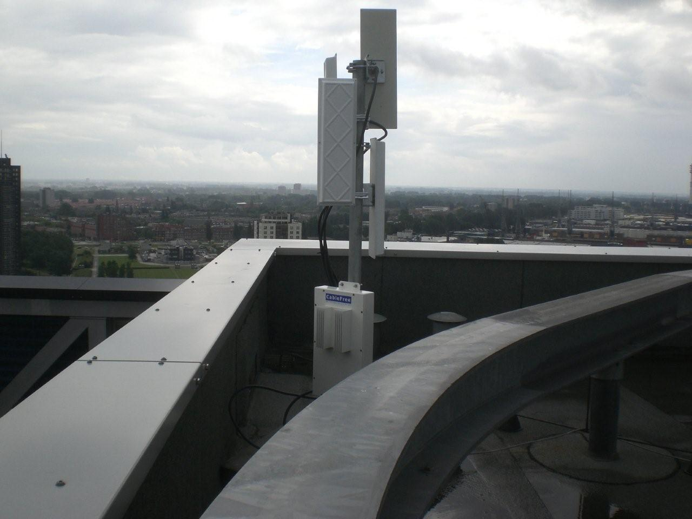

Онлайн-конспект по теме "Беспроводные технологии" для учеников 11-ых классов.
В телекоммуникациях точка-многоточка — это особый тип соединения, при котором осуществляется подключение вида «один-ко-многим», предоставляя набор соединений от одного абонента с множеством других. Точка-многоточка (point-to-multipoint) часто обозначается как P2MP, PTMP или PMPU.
По состоянию на 2003 год соединения point-to-multipoint наиболее часто использовались для беспроводного доступа к интернету и предоставления услуг IP-телефонии посредством радиосвязи на гигагерцовых радиочастотах. Системы point-to-multipoint разработаны как одно- и двунаправленные. В них центральная антенна или массив антенн передаёт сигнал на несколько других антенн, и система использует множественный доступ с разделением по времени для получения трафика по каналу обратной связи.
В настоящее время этот термин в беспроводной связи относится к обозначению фиксированной беспроводной передачи данных для интернет- или голосового IP-трафика по радио-каналу или микроволновым частотам в гигагерцовом диапазоне частот. Point-to-multipoint является наиболее популярным подходом для организации беспроводной связи, когда имеет большое число узлов, конечных точек или конечных пользователей. Point-to-multipoint, как правило, предполагает наличие центральной базовой станции, к которой посредством беспроводной среды подключено удалённое абонентское оборудование. Связь оборудования абонента с базовой станцией может быть либо в пределах прямой видимости, либо посредством низкочастотных радиосистем — вне пределов прямой видимости.Как правило, более низкие радиочастоты могут применяться при отсутствии возможности связи в пределах прямой видимости. Для планирования и определения возможности потенциального соединения с учётом топографических данных существует специальное программное обеспечения, создающее симуляцию. Зачастую схемы point-to-multipoint реализуют для уменьшения затрат на инфраструктуру и увеличения числа обслуживаемых абонентских устройств и соединений. Point-to-multipoint по своей сути похож на топологию «звезда» компьютерных сетей. Point-to-multipoint в беспроводных сетях с использованием двунаправленных антенн подвержено проблеме скрытого узла (скрытого терминала) в случаях, когда используется протокол CSMA/CA среды для управления доступом. Негативное влияние такой угрозы может быть смягчено миграцией с основного протокола CSMA/CA на протокол TDMA. В соединениях Point-to-multipoint телекоммуникационный сигнал обычно двунаправленный с разделением по времени (TDMA) или по каналам. Системы, использующие дуплексное частотное разделение каналов, дают возможность полнодуплексных соединений между базовой станцией и удалёнными узлами, тогда как системы с разделением по времени обеспечивают полудуплексные соединения. Реализация систем point-to-multipoint может быть с лицензируемой, частично лицензируемой или нелицензируемой полосами частот в зависимости от конкретного назначения. Соединения point-to-point и point-to-multipoint очень популярны в индустрии беспроводной связи и при использовании наряду с другими беспроводными соединениями высокой пропускной способности или с технологиями, подобными FSO, могут быть отнесены к транспортной сети связи. Также базовые станции могут иметь одну всенаправленную антенну или несколько секторных антенн, что зачастую используется для повышения диапазона и пропускной способности.

Беспроводная point-to-multipoint базовая станция радиосвязи, установленная для провайдера в Роттердаме, Нидерланды. У станции 4 радиоинтерфейса, подключенных к отдельной секторной антенне, каждая из которых обеспечивает 90° охват с полным покрытием на 360°. В пределах 5—20 км от этой базовой станции абонентские устройства, обладающие двунаправленными антеннами с высоким коэффициентом усиления сигнала, могут подключаться для получения широкополосного соединения передачи данных на скоростях в 10—200 Мбит/с.